Questão 1 · Semiologia · Derrame Pleural · Pneumologia · 4000178569Um homem de 65 anos compareceu a unidade de pronto atendimento, por apresentar dispneia, tosse e febre de 38,6 °C com início há 48 horas. Sua frequência respiratória está em 26 incursões respiratórias por minuto e sua saturação de O2 é de 88% em ar ambiente. No exame do tórax, o paciente apresentou expansão torácica, sons respiratórios e frêmito toracovocal diminuídos à esquerda, além de macicez à percussão na porção inferior de hemitórax esquerdo. Espera-se encontrar o seguinte resultado na radiografia de tórax desse paciente:
A opacificação em hemitórax esquerdo.
B hipertransparência em hemitórax esquerdo.
C apresentação de linha pleural visível à esquerda.
D presença de linhas horizontais na periferia pulmonar.
Questão 2 · Semiologia · Pneumologia · 4000173511Um paciente de 25 anos, portador de paralisia cerebral foi trazido ao hospital pelos familiares, por apresentar desconforto respiratório há cerca de duas semanas. Ao exame físico, havia tiragem nos espaços intercostais direitos. À ausculta, percebia-se abolição do murmúrio vesicular no hemitórax direito (HTD), onde também não se identi cava frêmito tóraco- vocal ou ressonância vocal. À percussão do HTD, obtinha-se som submaciço. Qual dos diagnósticos abaixo justi caria esses achados do exame físico?
A Tuberculose pleural
B Aspiração de corpo estranho
C Pneumonia lobar
D Asma brônquica
E Pneumotórax
Questão 3 · Cuidados paliativos · Cuidados paliativos em pneumologia · Pneumologia · 4000166189Um paciente de 78 anos de idade, com antecedente de neoplasia de pulmão avançada, refratária ao tratamento quimioterápico e dependente de oxigênio domiciliar, foi levado ao pronto-socorro, por familiares, com relato de dor torácica e piora importante da dispneia há um dia. Ao exame físico, desconforto respiratório importante, murmúrios vesiculares presentes, bilateralmente, sem ruídos adventícios, frequência respiratória de 35 ipm, saturação de 75% com máscara a 7 L/min. e pressão arterial de 80 x 50 mmHg. Após avaliação, a equipe médica optou por propor um plano terapêutico com medidas paliativas. Com base nesse caso hipotético, assinale a alternativa que apresenta a medida mais adequada para o conforto e o controle sintomático do paciente.
A intubação paliativa
B morfina em infusão contínua
C noradrenalina em infusão contínua
D broncoscopia paliativa
E quimioterapia de urgência
Questão 4 · Pneumologia · 4000165652Um paciente de 58 anos, em tratamento quimioterápico de neoplasia hematológica, comparece ao pronto-socorro com história de dispneia súbita há 2 horas. Ao exame físico, apresentava-se com os seguintes sinais vitais: Glasgow 15, PA 120/80, frequência cardíaca 110 bpm, frequência respiratória de 29 irpm e SpO2 de 88% em ar ambiente. Ao exame físico, apresentava edema assimétrico de membros inferiores, com empastamento de membro inferior à esquerda. Qual o principal mecanismo fisiopatológico associado à principal hipótese diagnóstica para dispneia da paciente?
A Efeito Shunt.
B Alteração da relação ventilação e perfusão.
C Redução da fração inspirada de oxigênio.
D Hipoventilação.
E Limitação da difusão.
Questão 5 · COVID 19 · Ultrassonograf ia de tórax · 4000165554Homem de 46 anos de idade com obesidade grau 3 é admitido no Departamento de Emergência. Tem febre há 10 dias, associada a dispneia progressiva e tosse nos últimos 3 dias. Ao exame clínico, apresenta-se taquipneico, com saturação de oxigênio de 84% em ar ambiente. Ausculta pulmonar com raros sibilos e estertores em bases, principalmente à direita. O ultrassom pulmonar, protocolo BLUE, demonstra deslizamento pleural e a seguinte imagem nos seis pontos. Qual o diagnóstico mais provável para a insuficiência respiratória deste paciente?
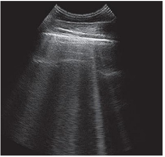
A Pneumonia bacteriana.
B Asma exacerbada.
C Infecção aguda por COVID-19.
D Infarto pulmonar por tromboembolismo pulmonar agudo.
Questão 6 · Pneumologia · 4000165481Uma paciente de 52 anos, obesa, com antecedente de TVP prévio, comparece em pronto-socorro com história de dispneia súbita há 2 horas. Ao exame físico, apresentava-se com os seguintes sinais vitais: Glasgow 15, PA 130/80, frequência cardíaca 115 bpm, frequência respiratória de 27 irpm e SpO2 de 88% em ar ambiente. Ao exame físico, apresentava assimetria de membros inferiores, com empastamento de membro inferior à direita. Diante do exposto, o principal mecanismo fisiopatológico associado à dispneia da paciente é:
A Alteração da relação ventilação e perfusão
B Efeito Shunt
C Hipoventilação
D Redução da fração inspirada de oxigênio
Questão 7 · Introdução à Pneumologia · Pneumologia · 4000164905Pode-se afirmar, sobre os volumes e capacidades pulmonares, que:
A o volume de reserva inspiratória corresponde a capacidade pulmonar total menos a capacidade vital
B o volume residual é igual a capacidade residual funcional menos o volume de reserva expiratória
C a capacidade residual funcional corresponde a quantidade de ar que permanece nos pulmões ao final da expiração forçada
D a capacidade vital corresponde a soma do volume corrente e do volume de reserva expiratório
Questão 8 · Doença Pulmonar Obstrutiva Crônica DPOC · Introdução à Pneumologia · Pneumologia · 4000164290Homem, 72 anos, tabagista. Refere dispneia progressiva (atualmente a mínimos esforços) e tosse seca esporádica há 2 anos. Exame físico: BEG, corado, cianótico, com baqueteamento digital. FR: 28 ipm. Sat O₂: 87% em ar ambiente. Qual ruído adventício mais provável na ausculta respiratória?

A Estertor em velcro.
B Grasnido.
C Estertor grosso.
D Ronco.
Questão 9 · Distúrbio ventilatório restritivo · Pneumonia Intersticial Não Específ ica PINE · Pneumologia · 4000164047Mulher de 55 anos, com história prévia de doença pulmonar quando mais jovem, vem apresentando, há alguns meses, episódios de tosse seca, associados a períodos de dispneia aos esforços. Existe história de tabagismo com consumo de 35 maços/ano e etilismo social. O exame físico mostra obesidade, IMC = 34kg/m², taquipneia, murmúrio vesicular diminuído principalmente em bases, crepitações e alguns sibilos. A prova de função respiratória mostra capacidade vital forçada (CVF) = 2,00 (normal: 3,31), volume expiratório no primeiro segundo (VEF1s) = 1,70 (normal: 2,86) e, após o uso de broncodilatador, CVF = 2,10 e VEF1s = 1,74. Em relação ao caso apresentado, a melhor definição do tipo de distúrbio ventilatório e de uma doença a ele relacionada, respectivamente, são:
A restritivo reversível / sarcoidose
B obstrutivo reversível / asma brônquica
C obstrutivo não reversível / enfisema pulmonar
D restritivo não reversível / pneumonia intersticial não específica
Questão 10 · Fisiologia · 4000145591Mulher de 28 anos, tabagista, em uso de anticoncepcional oral combinado, é admitida em sala de emergência em franca insu ciência respiratória. Ao exame apresenta edema de membro inferior esquerdo até raiz de coxa, assimétrico. PA 90/60mmHg; FR 37irpm; FC 135bpm; Sat 02 em ar ambiente 78%. Ausculta respiratória sem alterações. Eletrocardiograma revela taquicardia sinusal e padrão S1 Q3T3 com ondas T negativas em precordiais direitas. O mecanismo siopatológico predominante no quadro de insuficiência respiratória desta paciente é:
A Efeito espaço morto
B Hipoventilação
C Limitação de difusão
D Shunt verdadeiro
Questão 11 · Fisiopatologia · Hipoxemia e terapias de resgate · Fisiopatologia · 4000144714Nas situações descritas a seguir, os pacientes apresentam insu ciência respiratória aguda e hipoxemia documentada na gasometria arterial. 1) 32 anos de idade, extensa pneumonia comprometendo lobo inferior direito e lobo médio. 2) 27 anos de idade, portadora de asma exacerbada após inalação de produtos de limpeza. 3) 57 anos de idade, diagnóstico de TEP agudo no pós-operatório de mamoplastia. 4) 71 anos de idade, DPOC exacerbada por infecção bacteriana de vias aéreas inferiores. Qual mecanismo de hipoxemia predomina em cada um dos casos?
A 1) efeito shunt; 2) desequilíbrio na relação ventilação/perfusão; 3) efeito espaço morto; 4) desequilíbrio na relação ventilação/perfusão.
B 1) efeito shunt; 2) desequilíbrio na relação ventilação/perfusão; 3) efeito shunt; 4) hipoventilação alveolar.
C 1) hipoventilação alveolar; 2) desequilíbrio na relação ventilação/perfusão; 3) efeito espaço morto; 4) efeito espaço morto.
D 1) efeito espaço morto; 2) hipoventilação alveolar; 3) efeito shunt; 4) desequilíbrio na relação ventilação/perfusão.
Questão 12 · Semiologia · 4000141775Sobre a semiologia da dispneia, assinale a alternativa CORRETA.
A Platipneia é comumente encontrada em pacientes com shunts direita-esquerda, podendo ser tanto intracardíacos quanto intrapulmonares, como ocorre na síndrome hepatopulmonar.
B A presença de baqueteamento digital em paciente tabagista com queixa de dispneia sugere o diagnóstico de doença pulmonar obstrutiva crônica.
C O achado de tórax silencioso em paciente que chega angustiado ao serviço de emergência sugere transtorno de ansiedade generalizada.
D A dispneia, que surge quando o paciente assume o decúbito dorsal e melhora imediatamente, quando este se levanta do leito, é denominada dispneia paroxística noturna, achado muito frequente em pacientes com insuficiência cardíaca.
E Nos casos de asma induzida por exercício, o paciente apresenta dispneia logo após o início da atividade física, obrigando-o a interromper o esforço.
Questão 13 · Radiograf ia de tórax · 4000141673Considere a imagem: Assinale a alternativa que correlaciona corretamente os números às estruturas anatômicas correspondentes.

A 1 – porção posterior do arco costal; 2 – átrio direito; 3 – brônquio principal esquerdo; 4 – ventrículo esquerdo.
B 1 – porção anterior do arco costal; 2 – átrio direito; 3 – brônquio principal esquerdo; 4 – átrio esquerdo.
C 1 – porção posterior do arco costal; 2 – ventrículo direito; 3 – carina principal; 4 – átrio esquerdo.
D 1 – porção anterior do arco costal; 2 – ventrículo direito; 3 – carina principal; 4 – ventrículo esquerdo.
Questão 14 · Espirometria · Distúrbio ventilatório obstrutivo · 4000141655Mulher de 18 anos apresenta dispneia esporádica aos esforços, associada a tosse seca e sibilos, principalmente pela manhã, há 3 meses. Refere sintomas de rinite, atualmente controlados. Exame físico: BEG, acianótica, PA 110 x 80 mmHg, FC 80 bpm, FR 15 irpm, oximetria de pulso em ar ambiente 97%. Pico de uxo expiratório 230 L/min (60% do predito). Espirometria apresenta-se a seguir: É correto afirmar que
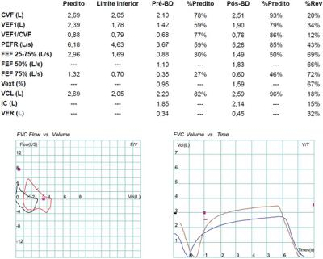
A se trata de distúrbio pulmonar ventilatório obstrutivo moderado com resposta ao broncodilatador.
B se trata de distúrbio pulmonar ventilatório restritivo leve com resposta ao broncodilatador.
C o exame não preenche critérios técnicos para análise; curvas não aceitáveis.
D se trata de distúrbio pulmonar ventilatório restritivo moderado sem resposta ao broncodilatador.
Questão 15 · Cuidados paliativos em pneumologia · 4000129547Paciente do sexo masculino, 86 anos, é portador de câncer de pulmão com metástase para osso e fígado. Está totalmente acamado, dependente para as atividades de vida diária (AVD) e sonolento. Ingestão de alimentos reduzida. Familiares informam que paciente vinha apresentando falta de ar que piorou nas últimas 12 horas. Ao exame: Pressão arterial = 80 x 60 mmHg Frequência cardíaca = 112 batimentos por minuto Frequência respiratória = 30 incursões respiratórias por minuto Saturação periférica de oxigênio= 93% em ar ambiente Estado geral ruim, consumido, anictérico, acianótico, afebril, fala entrecortada a cada 15 segundos. Tórax: presença de retrações subcostais e esternocleidomastoideas discretas Ausculta pulmonar: Murmúrio vesicular universal com roncos de transmissão. Qual a melhor opção para o tratamento da dispneia do paciente descrito no caso clínico acima?
A Iniciar haloperidol 1-2 mg, SC.
B Prescrever morfina 1-5 mg, SC.
C Preservar paciente em ambiente fechado.
D Manter paciente deitado sem cabeceira elevada.
Questão 16 · Cuidados paliativos · Dispneia ref ratária · Cuidados paliativos em pneumologia · 4000129432Mulher, 76 anos, com diagnóstico de câncer de pulmão com metástases ósseas e hepáticas. É independente para atividades de vida diária, mora com a lha de 45 anos e neta de 21 anos. Durante a primeira consulta ambulatorial, acompanhada da lha, refere que gostaria de morrer em casa e está preocupada se isso é possível e como irá controlar a dispneia e as dores. Em relação ao caso relatado, assinale a alternativa INCORRETA.
A A morfina pode ser utilizada para alívio da dispneia, em doses baixas, de horário.
B Deve-se iniciar tratamento para controle de dor, associando opioides, analgésicos e drogas adjuvantes.
C Apesar de ser a primeira consulta, realizar as diretivas antecipadas da paciente, registrando em prontuário.
D O uso de laxantes nos pacientes que usam opioides de horário deve ser iniciado somente se houver constipação.
Questão 17 · Diagnóstico · Radiograf ia de tórax · Manejo do nódulo abordagem diagnóstica · 4000129206Paciente de 62 anos, tabagista, vinha apresentando episódios de hemoptise há 1 mês. Imagem da radiogra a de tórax anteroposterior está reproduzida abaixo. Que conduta, dentre as propostas, é a mais adequada?

A Realizar drenagem do pneumotórax à esquerda.
B Solicitar tomografia computadorizada de tórax para melhor avaliação de opacidade nodular projetada sobre o lobo superior direito, devido à possibilidade de neoplasia.
C Solicitar ressonância magnética de tórax com gadolínio para melhor avaliação de massa paratraqueal à esquerda no mediastino.
D Solicitar ultrassonografia de tórax para melhor avaliação da cavidade pleural direita, devido à obstrução do seio costofrênico desse lado, que pode corresponder à presença de derrame pleural.
Questão 18 · Medicina Preventiva · Pneumologia · Tomograf ia de tórax · 4000137303Ao realizar o exame periódico de um dos funcionários da empresa que você trabalha como Médico do Trabalho, o mesmo mostra-se preocupado por uma alteração na tomografia de tórax, solicitada por suspeita de COVID-19 há 30 dias. Qual é sua conduta imediata?
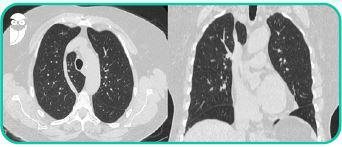
A Encaminha com urgência ao pneumologista.
B Encaminha com urgência ao cirurgião torácico para lobectomia superior direita.
C Isola novamente o funcionário, pois os achados são típicos da COVID-19.
D Tranquiliza o funcionário pela benignidade dos achados.
E Isola e coleta escarros com pesquisa e cultura para
Questão 19 · Espirometria · Espirometria · 4000130272Mulher, 71a, retorna ao Ambulatório para resultado de exames. Antecedente pessoal: tabagismo 40 maços/ano. Espirometria com teste com broncodilatador (salbutamol spray): BASEADO NA ESPIROMETRIA O DIAGNÓSTICO É:

A Distúrbio ventilatório restritivo grave com resposta ao broncodilatador.
B Distúrbio ventilatório obstrutivo grave com resposta de fluxo e volume ao broncodilatador, CVF reduzida.
C Distúrbio ventilatório misto (obstrutivo grave e restritivo grave) com resposta parcial ao broncodilatador. D)
D Distúrbio ventilatório obstrutivo grave com resposta parcial ao broncodilatador.
Questão 20 · Espirometria · Distúrbio ventilatório obstrutivo · 4000128084Mulher, 19 anos de idade, procura a UBS por quadro de ""chiado no peito"" desde a infância, com piora nos últimos meses. Refere tosse seca e ""chiado"" cerca de 2 a 3 vezes por semana, precisando fazer uso de salbutamol. Acorda à noite com dispneia, cerca de uma vez por semana. Nega outras comorbidades e uso de outras medicações. Exame físico sem alterações no momento da consulta. Traz espirometria de 2 anos atrás, com diagnóstico de asma brônquica. Indique o achado da espirometria trazida que mais provavelmente contribuiu para o diagnóstico de asma nesse caso.
A VEF1 12% acima do valor basal, após a prova broncodilatadora.
B VEF1 acima de 80%, após a prova broncodilatadora.
C VEF1/CVF abaixo de 0,7, após prova a broncodilatadora.
D VEF1 7% abaixo do valor basal, após a prova broncoconstritora.
Questão 21 · Radiograf ia de tórax · Manejo da exacerbação em unidade de terapia intensiva UTI · 4000114573Mulher, 19 anos, asmática, refere chiado no peito, febre e dispneia há 3 dias com piora progressiva, mesmo com uso de corticoide e aerossol. Exame físico na admissão: murmúrio vesicular abolido bilateralmente, com saturação de O₂ de 90% em ar ambiente. Após a administração de corticoide, salbutamol e magnésio, passou a apresentar sibilos e som claro pulmonar bilateralmente. Mantinha taquipneia, sendo submetida a intubação orotraqueal. Evoluiu com queda da saturação e a radiografia abaixo. Qual é a condição clínica mais provável neste momento?

A Pneumonia.
B Derrame pleural.
C Atelectasia.
D Pneumotórax.
Questão 22 · Def inição · Espirometria · Distúrbio ventilatório obstrutivo · 4000108144Homem, 24 anos de idade, em consulta ambulatorial, conta que há 6 meses apresenta tosse que piora à noite e, eventualmente, pela manhã. Traz consigo espirometria pré e pós broncodilatador de curta duração, com melhora significativa (maior que 12% e 200mL) de VEF1; VEF1/CVF (VEF1 = volume expiratório forçado de primeiro segundo; CVF = capacidade vital forçada) e do FEF( ₂₅-₇₅ por cento) ( uxo expiratório forçado a 25 - 75% da CV). O paciente retorna com relato de rinorreia hialina e prurido nasal pela manhã há 1 mês, com melhora da tosse. Retomou atividade física regular (caminhadas). Informa que seguiu as orientações da última consulta de forma adequada. Nega febre ou sintomas sugestivos de refluxo gastroesofágico. A conduta nesse momento deve ser prescrever:
A Prednisona oral por cinco dias e budesonida inalatória em dose alta.
B Loratadina via oral; dobrar a dose de budesonida inalatória.
C Budesonida de uso tópico, nasal; manter tratamento anterior.
D Budesonida de uso tópico, nasal; suspender o tratamento anterior.
Questão 23 · Espirometria · Distúrbio ventilatório obstrutivo · Medicamentos utilizados · 4000108131Homem, 24 anos de idade, em consulta ambulatorial, conta que há 6 meses apresenta tosse que piora à noite e, eventualmente, pela manhã. Traz consigo espirometria pré e pós broncodilatador de curta duração, com melhora significativa (maior que 12% e 200mL) de VEF1; VEF1/CVF (VEF1 = volume expiratório forçado de primeiro segundo; CVF = capacidade vital forçada) e do FEF( ₂₅-₇₅ por cento) ( uxo expiratório forçado a 25 - 75% da CV). Qual deve ser a conduta para o caso, conforme referências específicas da literatura?
A Iniciar anti-histamínicos e solicitar teste cutâneo de hipersensibilidade.
B Iniciar salbutamol para uso nas crises de falta de ar.
C Iniciar montelucaste de uso diário e salbutamol para crises.
D Iniciar formoterol e budesonida inalatórios; uso diário.
Questão 24 · Distúrbio ventilatório obstrutivo · Espirometria · Distúrbio ventilatório restritivo · 4000092810Em relação às provas de função pulmonar em adultos, é correto afirmar:
A A pletismografia é o exame de função pulmonar que define o diagnóstico de distúrbio restritivo, pois permite a identificação da presença de hiperinsuflação e aprisionamento aéreo.
B Através da medida dos fluxos e de volumes pulmonares na espirometria é possível identificar a medida do volume residual pulmonar.
C A Difusão de Monóxido de Carbono (DLCO) através da respiração única é o exame de escolha para definição do padrão restritivo nas doenças pulmonares intersticiais.
D A medida da resistência de vias aéreas encontra-se desproporcionalmente aumentada em relação aos volumes pulmonares nas doenças pulmonares de padrão restritivo.
E A espirometria pré e pós-broncodilatador é exame de avaliação nas doenças respiratórias que cursam com dispneia, permitindo a comparação dos valores obtidos com referências e identificando padrões de distúrbios ventilatórios.
Questão 25 · Semiologia · Espirometria · 4000086233Homem, 59 anos, com hipertensão arterial sistêmica controlada com tratamento medicamentoso, procura atendimento por dispneia, tosse seca e fadiga. Refere início insidioso dos sintomas, com piora progressiva ao longo dos últimos 2 anos. Nunca fumou e nega história de asma. Traz ecocardiogra a recente dentro da normalidade. Nega exposição ocupacional significativa, bem como outras comorbidades. Ao exame físico: acianótico, FR 24 mrpm, ausculta pulmonar com estertores crepitantes nas bases. Qual das alternativas representa a conduta inicial a ser solicitada para o diagnóstico desse caso?
A Peptídeo atrial natriurético e sorologias de triagem para doenças do tecido conjuntivo
B Broncoscopia flexível, com coleta de lavado broncoalveolar
C Broncoscopia flexível, com biópsia transbrônquica
D Teste de função pulmonar
Questão 26 · Semiologia · Quadro clínico · 4000061185O sopro tubário é um sopro intenso, agudo, mais rude que o murmuro vesicular gerado pelos grandes brônquios em consonância com a caixa de ressonância torácica. Este achado semiológico é característico de:
A Asma.
B Pneumonia Alveolar.
C Derrame pleural.
D Pneumotórax.
Questão 27 · Semiologia · 4000053679Um acadêmico de medicina durante uma visita a enfermaria, deixou de prestar atenção no caso de insu ciência cardíaca que estava sendo apresentado pelo médico residente de primeiro ano de clínica médica para o médico residente de terceiro ano de cardiologia. O motivo de sua distração foi um paciente consciente no leito ao lado com um padrão de respiração que chamou sua atenção. O paciente cava breves períodos sem movimentos respiratórios, mas após alguns segundos começava a respirar com movimentos suaves que iam progressivamente cando mais profundos. Após atingir um pico, os movimentos iam ficando gradualmente mais suaves até que novamente o paciente parava de respirar. E estes ciclos se repetiam. Vieram à mente do acadêmico três ideias, conforme abaixo. I – Este padrão respiratório está associado a um aumento da sensibilidade do centro respiratório à pressão parcial de dióxido de carbono no sangue. II - Apesar de esta ser uma enfermaria de cardiologia, não é muito provável que o paciente tenha insu ciência cardíaca, por ser este padrão de respiração muito infrequente em cardiopatias. III - Um tumor cerebral deve ser considerado no diagnóstico diferencial do paciente. Qual a alternativa mostra todas as ideias do estudante que são corretas?
A I.
B I, II.
C I, III.
D II, III.
E I, II, III.
Questão 28 · Tosse crônica · Sinais de alarme · Pneumologia · 4000046627Uma paciente procura o ambulatório com queixas de tosse seca há quatro meses. É hipertensa, controlada com enalapril 20mg/dia e refere fumar um maço de cigarros/dia há 20 anos. Ao exame físico, a ausculta pulmonar é normal e PA = 140x90 mmHg. Assinale a melhor conduta para o caso nesse momento.
A Associar hidroclorotiazida ao esquema anti-hipertensivo.
B Trocar o enalapril por losartan.
C Associar amlodipina ao esquema.
D Associar omeprazol, já que a tosse provavelmente deve ser secundária a refluxo gastroesofágico.
E Associar beta2 agonista, já que a tosse deve ser manifestação de DPOC incipiente.
Questão 29 · Semiologia · Manejo clínico e diagnóstico · Toracocentese terapêutica ou de alívio · 4000039468Paciente 27 anos chega ao PS com quadro de dispneia aos mínimos esforços. Radiogra a de tórax demonstrou presença de derrame pleural moderado à direita. Realizada toracocentese diagnóstica e de alívio, e colhidos exames bioquímicos sanguíneos que revelaram: Líquido pleural: proteínas totais 5,2 g/dL; LDH 606 UI/L; Soro: proteínas totais 4,0 g/Dl; LDH 400 UI/L; Valor de referência LDH soro <248 UI/L Qual achado que NÃO é esperado no exame físico desse paciente:
A Macicez à percussão em base direita.
B FTV aumentado em base direita.
C MV abolido em base direita.
D Sinal de Lemos Torres.
Questão 30 · Cuidados paliativos · Dispneia ref ratária · Cuidados paliativos em pneumologia · 4000037070Você é chamado, no meio da noite, para atender um paciente de 91 anos internado na enfermaria de clínica médica, para tratamento de pneumonia. A lha, acompanhante nessa internação, solicitou avaliação pois achou o pai mais cansado do que estava durante o dia. O paciente estava taquipneico (FR 31 irpm), com saturação de oxigênio de 85% em máscara de Venturi 50%. Ao checar o prontuário, você nota, na prescrição, além da antibioticotera- pia, somente dipirona em horários xos. Na evolução do médico assistente, além do diagnóstico de Alzheimer avançado, Karnofsky 40% e pneumonia, você nota o registro isolado de Cuidados Paliativos. Em uma conversa com a lha, é informado sobre a decisão entre familiares e equipe médica de tratar a pneumonia como forma de otimizar o conforto. Sua proposta terapêutica, nesse momento, é
A intubação orotraqueal e internação em UTI, como suporte para continuação do tratamento inicial proposto (pneumonia).
B intubação orotraqueal e internação em UTI, uma vez que é a única forma de oferecer conforto ao paciente que não responde à suplementação de oxigênio.
C conversar com a filha e explicar o processo natural da morte e seus sintomas refratários, como a dispneia.
D iniciar midazolam e fentanil em doses altas para conforto do paciente.
E iniciar opioide (por exemplo, morfina) em dose inicialmente baixa, para controle do sintoma de dispneia.
Questão 31 · Semiologia · 4000036133A anamnese e o exame físico apurados desempenham um papel importante na elucidação diagnóstica em mais de 70% dos casos de dispneia. Na avaliação dos quadros clínicos que cursam com dispneia, está correto associar:
A o pneumotórax, à presença de traqueia desviada para o lado ipsilateral, movimentos torácicos diminuídos do lado afetado, macicez à percussão e aumento de ruídos adventícios
B o derrame pleural, á presença de traquéia desviada para o lado oposto, movimentos torácicos diminuídos do lado afetado, macicez à percussão e ausência de ruídos adventícios
C a consolidação pneumônica, à presença de traqueia desviada para o lado oposto, movimentos torácicos diminuídos do lado afetado, macicez à percussão e crepitantes inspiratórios finos
D a bronquiectasia, à presença de traqueia desviada para o lado oposto, movimentos torácicos diminuídos do lado afetado, macicez à percussão e crepitantes finos e/ou sibilos localizados
Questão 32 · Semiologia · Quadro clínico · 4000034216Um homem de 50 anos comparece à UPA com queixa de tosse seca há 45 dias. È tabagista há 30 anos e fuma um maço de cigarros por dia. Nega outras queixas ou doenças prévias. Realizou uma radiogra a do tórax que pode ser vista a seguir. Um achado NÃO esperado ao exame físico respiratório na base do hemitórax direito desse paciente seria:
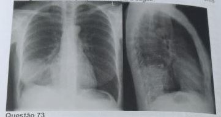
A Pectorilóquia afônica à ausculta.
B Redução do frêmito toracovocal à palpação.
C Som bronquial à ausculta.
D Submacicez à percussão.
Questão 33 · Enf isema · Espirometria · Espirometria · 4000116231Em pacientes com doença pulmonar obstrutiva crônica, padrão enfisematoso, ocorre característicamente, aumento:
A Da capacidade pulmonar total
B Da razão: volume expiratório forçado no primeiro segundo/capacidade vital forçada
C Da retenção de CO2
D Da capacidade vital forçada
E Do fluxo expiratório máximo
Questão 34 · Semiologia · Quadro clínico · 4000113158Homem de 22 anos, apresenta febre há 10 dias, com calafrios vespertinos, tosse produtiva, secreção amarelada inicialmente e atualmente de cor ferruginosa, além de dor ventilatória dependente em hemitórax direito. Assinale a alternativa correta em relação à propedêutica do tórax deste paciente:
A Diminuição da expansibilidade no 1/3 inferior direito com egofonia e EC no local
B Diminuição da expansibilidade no 1/3 inferior direito, FTV aumentado e broncofonia aumentada no 1/3 inferior direito, sem ruídos adventícios
C Diminuição da expansibilidade em 2/3 inferiores à direita, FTV diminuído e broncofonia aumentada, com EC de base direita
D MV ausente na base direita, com macicez e egofonia no local
E FTV aumentado, broncofonia diminuída, atrito pleural.
Questão 35 · Tosse crônica · Pneumologia · Tosse aguda · 4000112788Paciente masculino, 42 anos, vendedor, está tossindo há alguns meses e procura a Unidade Básica de Saúde para uma consulta médica. Durante a consulta diz à médica que viu um programa na televisão sobre câncer de pulmão e está com receio de ter a doença. Relata que está tossindo há mais de 3 meses. Nega tabagismo, uso de álcool e medicamentos. A tosse é persistente e tem momentos de piora como, por exemplo, após as refeições. Relata ainda que sente "catarro descer pela garganta" e que o nariz está constantemente "escorrendo". Pela descrição, a tosse desse paciente é
A emocional, pois o paciente está aflito com a possibilidade de ter câncer.
B aguda, por apresentar piora em situações específicas.
C subaguda, pois está presenta há mais de 8 semanas.
D crônica, pois está presente há mais de 8 semanas.
E subaguda, pois a presença de catarro na garganta indica infecção.
Questão 36 · Semiologia · Manejo clínico e diagnóstico · Quadro clínico · 4000112181Analise a radiografia de tórax a seguir. As alterações encontradas no exame físico desse paciente são:
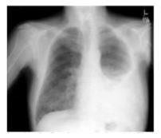
A expansibilidade simétrica e frêmito toracovocal reduzido em hemitórax direito.
B frêmito toracovocal aumentado e expansibilidade reduzida em hemitórax esquerdo.
C som maciço à percussão e sons respiratórios aumentados, em base do pulmão esquerdo.
D murmúrio vesicular e frêmito toracovocal abolidos em terço inferior do hemitórax esquerdo.
E frêmito toracovocal e expansibilidade reduzidas em hemitórax direito.
Questão 37 · Semiologia · Quadro clínico · Radiograf ia · 4000111630Paciente apresenta ao RX de tórax, velamento da base do hemitórax direito. O exame propedêutico evidencia neste local: macicez, diminuição do murmúrio vesicular e egofonia. O diagnóstico sindrômico deve ser de:
A Derrame pleural.
B Condensação pulmonar.
C Atelectasia pulmonar.
D Pneumotórax.
Questão 38 · Doenças relacionadas ao asbesto Asbestose · Radiograf ia de tórax · 4000106187Na avaliação pré-operatória de paciente com 58 anos de idade foi solicitada a radiogra a simples de tórax exibida a seguir. Qual é a principal hipótese diagnóstica?
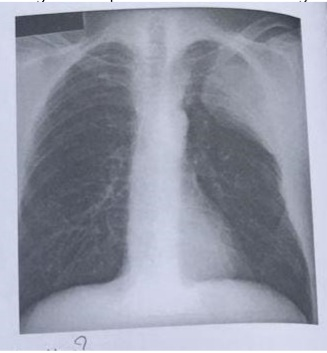
A Sarcoidose
B Mesotelioma
C Pneumonia
D Adenocarcinoma
Questão 39 · Tosse crônica · Sinais de alarme · Pneumologia · 4000082504Paciente de 58 anos, sexo feminino, vem à consulta com quadro de tosse há um mês, com pouca expectoração hialina. É tabagista de 20 cigarros/dia desde os 18 anos. Não apresenta outros sintomas. Tem hipertensão arterial sistêmica em tratamento com hidroclorotiazida e anlodipino. O exame físico é normal. Para abordagem mais indicada nesse caso, considere as seguintes afirmações: I. deve-se solicitar baciloscopia do escarro (duas amostras). II. deve-se suspender anlodipino e o tabagismo, pela associação com tosse. III. pode-se excluir DRGE pela ausência de sintomas. Qual(is) afirmativa(s) está(ão) correta(s)?
A Apenas III.
B Apenas II e III.
C Apenas l.
D Apenas l e III.
Questão 40 · Semiologia · Quadro clínico · Exame Físico · 4000074102Ao exame físico, o diagnóstico diferencial entre derrame pleural e pneumotórax é feito através de:
A Ausculta.
B Percussão.
C Frêmito toracovocal.
D Inspeção.
E Frequência respiratória.
Questão 41 · Tratamento · Radiograf ia de Tórax · Radiograf ia de tórax · 4000066876Homem, 35 anos, com desconforto respiratório há dois dias, com tosse seca, espirros frequentes e rinite. Dá entrada no PS, com dor pleurítica em hemitórax esquerdo. Apresenta febre de 39ºC, saturação de oxigênio de 94%, pressão arterial de 134 x 76 mmHg, pulso de 120 bpm e frequência respiratória de 24 por minuto. Após fazer o exame de Raio X abaixo, você decide:
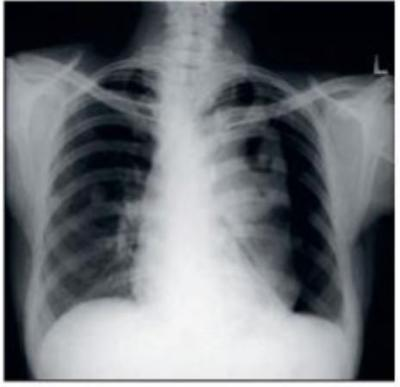
A Drenar o tórax esquerdo.
B Pedir TC de tórax.
C Pedir broncoscopia com lavado broncoalveolar.
D Antibiótico com claritromicina e rocefin.
Questão 42 · Semiologia · Fatores de risco · História natural · 4000055890Homens, 66 anos chegou à Unidade de Saúde da Família (USF) apresentando dispneia intensa, tosse produtiva. Nos últimos dias, após uma discussão com o lho, cou mais nervoso passando a fumar de 15 para 32 cigarros/dia agravando o seu quadro. Apresenta história de tabagismo desde os 22 anos e vem realizando acompanhamento médico na USF por esse problema há 5 anos, fazendo uso de formoterol para inalação, embora re ra que o medicamento só melhora na hora do uso. Não apresenta febre e apresenta PA de 120 x 80 mmHg. Com base na história acima, assinale a alternativa com os possíveis achados ao exame físico, além de tórax hiperinsuflado e respiração com lábios semicerrados:
A Tempo expiratório prolongado; na ausculta diminuição do murmúrio vesicular, frequentes sibilos e estertores crepitantes raros.
B Tempo expiratório diminuído; na ausculta diminuição do murmúrio vesicular, raramente sibilos e raramente estertores crepitantes.
C Tempo expiratório diminuído; na ausculta diminuição do murmúrio vesicular, ausência de sibilos e estertores frequentes.
D Tempo expiratório prolongado; na ausculta murmúrio vesicular normal, sibilos e ausência de estertores crepitantes.
Questão 43 · Distúrbio ventilatório obstrutivo · Etiologia e f isiopatologia · Manejo da exacerbação · 4000051922Quando um broncodilatador é adminsitrado por via inalatória em um paciente em exacerbação aguda de asma todos os dados espirométricos abaixo aumentam EXCETO:
A Capacidade residual funcional
B VEF1
C VEF 1 / CVF
D FMEF 25-75% ( fef 25-75% )
E Capacidade vital forçada
Questão 44 · Semiologia · Diagnóstico · Complicações · 4000039156Pré-escolar de 4 anos de idade iniciou há uma semana quadro de febre baixa, coriza e tosse. Há 3 dias, tornou-se mais prostrado, inapetente e teve febre de 38,9ºC . Hoje deu entrada no Pronto Atendimento com taquidispneia e prostração. Exame físico: febre de 39,1ºC, FR: 58 irpm, FC: 156 bpm. Levemente desidratado, triagens intercostais, murmúrio vesicular siológico no hemitoráx direito (HTD) e abolido nos terços médio e inferior HTE. Percussão do HTD normal e maciço no HTE. Em relação ao quadro, a hipótese diagnóstica mais provável é:
A Pneumonia bacteriana com derrame pleural à esquerda.
B Pneumonia estafilocócica com pneumotoráx à esquerda.
C Aspiração de corpo estranho com atelectasia do pulmão esquerdo.
D Bronquiolite viral com atelectasia à esquerda por obstrução brônquica por secreção.
Questão 45 · Tratamento · Cuidados paliativos · Cuidados paliativos em pneumologia · 4000036884Homem, 78 anos, hipertenso e diabético, é diagnosticado com câncer de pulmão estádio II, estando em programação de tratamento oncológico. Durante a anamnese, a equipe de oncologia investiga a capacidade funcional do paciente. Ele se diz cansado, apresentando di culdade de fazer as compras semanalmente, como costumava. Já aposentado, mantém suas atividades em casa, como cozinhar, arrumar o quarto e organizar suas nanças, mas não consegue mais cuidar do jardim. Com medo das quedas, instalou barras de proteção no banheiro, e agora se sente mais seguro na hora do banho. Sua lha relatou preocupação e intenção de, em breve, levar o pai parar morar com ela. Considerando esse caso, assinale a alternativa correta quanto à classificação da Eastern Cooperative Oncology Group (ECOG) e ao prognóstico ante o tratamento adequado.
A ECOG 1 - Prognóstico ruim.
B ECOG 2 - Bom prognóstico.
C ECOG 3 - Prognóstico ruim.
D ECOG 4 - Bom prognóstico.
E ECOG 4 - Prognóstico ruim.
Questão 46 · Semiologia · Complicações · Pneumonia típica · 4000005465Você é chamado para atender uma criança de 2 anos internada por doença respiratória. A enfermeira relata que a criança está mais dispneica e gemente. Os controles dos sinais vitais mostram taquicardia persistente e taquipneia progressiva, sem febre associada. Ao exame físico: tiragem diafragmática e intercostal, retração de fúrcula e uso de musculatura acessória. Assimetria de expansão torácica com o hemitórax direito não expandindo na base. Ausculta com sons pulmonares abolidos e presença de macicez pulmonar à percussão em base direita. Qual o diagnóstico?
A Pneumonia.
B Atelectasia.
C Interferência da presença hepática.
D Paralisia diafragmática.
E Derrame pleural.
Questão 47 · Fisiologia · Pós intubação · Diagnostico · 4000004399Vítima de queimadura grave recente sendo submetida à anestesia geral para fasciotomia extensa em membros inferiores. Apresenta pressão parcial de oxigênio baixa na gasometria arterial, porém o oxímetro de pulso mostra saturação adequada. Qual dos quadros abaixo explicaria melhor o achado?
A Shunt pulmonar.
B Concentração elevada de carboxihemoglobina.
C Aumento do espaço-morto anatômico.
D Choque hiperdinâmico.
E Hiperpotassemia devido ao uso de succinilcolina.
Questão 48 · Semiologia · Quadro clínico · Radiograf ia de tórax · 4000128295Mulher, 40 anos, portadora de câncer de mama com metástase pleural. Compareceu à consulta médica queixando-se de dispneia. Trouxe consigo radiogra a de tórax que evidenciava imagem de hipotransparência homogênea nos dois terços inferiores do hemitórax direito compatível com derrame pleural. Quais são os achados esperados ao exame do tórax, à direita?
A Aumento do frêmito tóraco-vocal, hipersonoridade à percussão, diminuição do murmúrio vesicular fisiológico
B Aumento do frêmito tóraco-vocal, submacicez à percussão, presença de som bronquial
C Redução do frêmito tóraco-vocal, hipersonoridade à percussão, presença de som bronquial
D Redução do frêmito tóraco-vocal, submacicez à percussão, diminuição do murmúrio vesicular fisiológico
Questão 49 · Fisiologia · Ventilação mecânica · Pneumologia · 4000127670Paciente de 65 anos, com carcinoma espinocelular de lobo superior do pulmão direito é submetido à toracotomia posterolateral direita. Durante o procedimento cirúgico, o paciente é mantido com intubação seletiva e ventilação monopulmonar à esquerda. Nessa situação, ocorrerá no pulmão
A direito o efeito espaço morto, com atelectasia do pulmão esquerdo e hipertensão arterial pulmonar esquerda.
B direito o efeito espaço morto, com ventilação do pulmão contralateral e tendência à diminuição da pressão parcial de oxigênio.
C direito o efeito shunt, com atelectasia do pulmão direito e tendência ao aumento da pressão parcial de gás carbônico.
D esquerdo o efeito shunt, com ventilação do pulmão esquerdo e aumento da concentração de bicarbonato no sangue arterial.
Questão 50 · Hérnia Hiatal por Rolamento Paraesof ágica ou Tipo II · Hérnia Hiatal por Deslizamento Tipo I · 4000127504Radiograf ia de tórax Paciente vai a consultório com história de ter realizado radiogra a de tórax indicada por médico da UBS, que cou preocupado com a imagem. O diagnóstico radiológico é
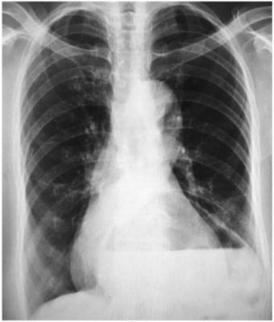
A hérnia diafragmática.
B tuberculose.
C pneumonia lobar.
D derrame pleural.
E aneurisma de aorta torácica.
Questão 51 · Semiologia · 4000105979Mulher, 16 anos, refere poliúria e polidipsia há um mês, com perda de 7 kg neste período. Iniciou dor abdominal, astenia e rebaixamento do nível de consciência há um dia. Exame físico: MEG, desidratada +++, descorada+, Glasgow 13, PA: 100x60 mmHg. Aparelho respiratório: murmúrio vesicular presente, simétrico, taquipneica, saturação de oxigênio 95% em ar ambiente. Glicemia capilar: 450 mg/dl. Qual é o ritmo respiratório esperado?
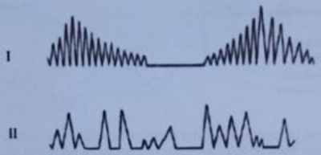
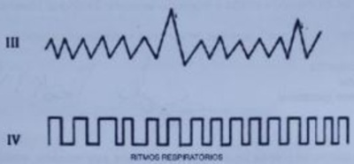
A RITMO I
B RITMO II
C RITMO III
D RITMO IV
Questão 52 · Hérnia Hiatal por Rolamento Paraesof ágica ou Tipo II · Hérnia Hiatal por Deslizamento Tipo I · 4000102846Radiograf ia de tórax Homem de 42 anos de idade queixa-se de tosse seca há 6 meses, pior aos grandes esforços e ao decúbito. A radiogra a de tórax está mostrada a seguir. Qual exame complementar é necessário para a avaliação da causa da tosse?

A Endoscopia digestiva alta.
B Broncoscopia com lavado.
C Ecodopplercardiograma.
D Angiografia torácica.
Questão 53 · Espirometria · Espirometria · Diagnostico · 4000055864A doença pulmonar obstrutiva crônica é caracterizada pela redução lenta, progressiva e irreversível, ou pouco reversível, do uxo expiratório. Quanto ao melhor parâmetro espirométrico para estimar a gravidade dessa doença, assinale a alternativa correta.
A Capacidade vital.
B Fluxo expiratório forçado em 6 segundos.
C Volume expiratório forçado em 1 segundo.
D Volume corrente
E Volume residual.
Questão 54 · Espirometria · Distúrbio ventilatório obstrutivo · 4000005252Paciente masculino, 33 anos de idade, com dispneia em crises no último ano, associada à opressão torácica e tosse seca, principalmente noturna. Relata rinite alérgica sem tratamento regular e crises de chiado na infância na época do inverno. Ex- tabagista 5 anos/maço (parou há 1 ano). Nega uso de medicações contínuas. Após passar em avaliação médica, foi solicitado radiogra a de tórax que foi normal e prova de função pulmonar. Qual o resultado da espirometria e a hipótese diagnóstica? Abreviaturas: LIN: Limite Inferior da Normalidade; BD: Broncodilatador; %: porcentagem do previsto.
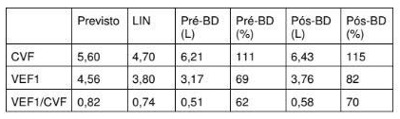
A Espirometria com distúrbio ventilatório obstrutivo leve; resposta significativa de fluxo pulmonar após broncodilatador inalatório. Asma.
B Espirometria com distúrbio ventilatório obstrutivo leve; resposta significativa de fluxo e volume pulmonares após broncodilatador inalatório. Asma.
C Espirometria normal; ausência de resposta significativa ao broncodilatador inalatório. Dispneia psicogênica.
D Espirometria com distúrbio ventilatório obstrutivo leve; ausência de resposta significativa de fluxo e volume pulmonares após broncodilatador inalatório. Asma e DPOC associados
E Espirometria distúrbio ventilatório obstrutivo moderado; resposta significativa de fluxo pulmonar após broncodilatador inalatório. Asma e DPOC associados.
Questão 55 · Pneumonia hospitalar PH · Semiologia · 4000096516Paciente internado na UTI, a semiologia pulmonar em hemitórax direito demonstra: Inspeção: expansibilidade pulmonar diminuída; Palpação: frêmito toracovocal aumentado; Percussão: macicez; Ausculta: estertores finos (creptantes). Qual o diagnóstico sindrômico?
A Atelectasia.
B Consolidação.
C Pneumotórax.
D Derrame pleural.
E Obstrução brônquica.
Questão 56 · Distúrbio ventilatório restritivo · Padrões espirométricos · 4000088537Em paciente com fibrose pulmonar idiopática, qual dos parâmetros abaixo se encontra normal? Respostas: 1 12 23 34 45 56
A Capacidade residual funcional.
B Volume corrente.
C Volume residual.
D Volume de reserva expiratório.
E Volume expiratório forçado no primeiro segundo.